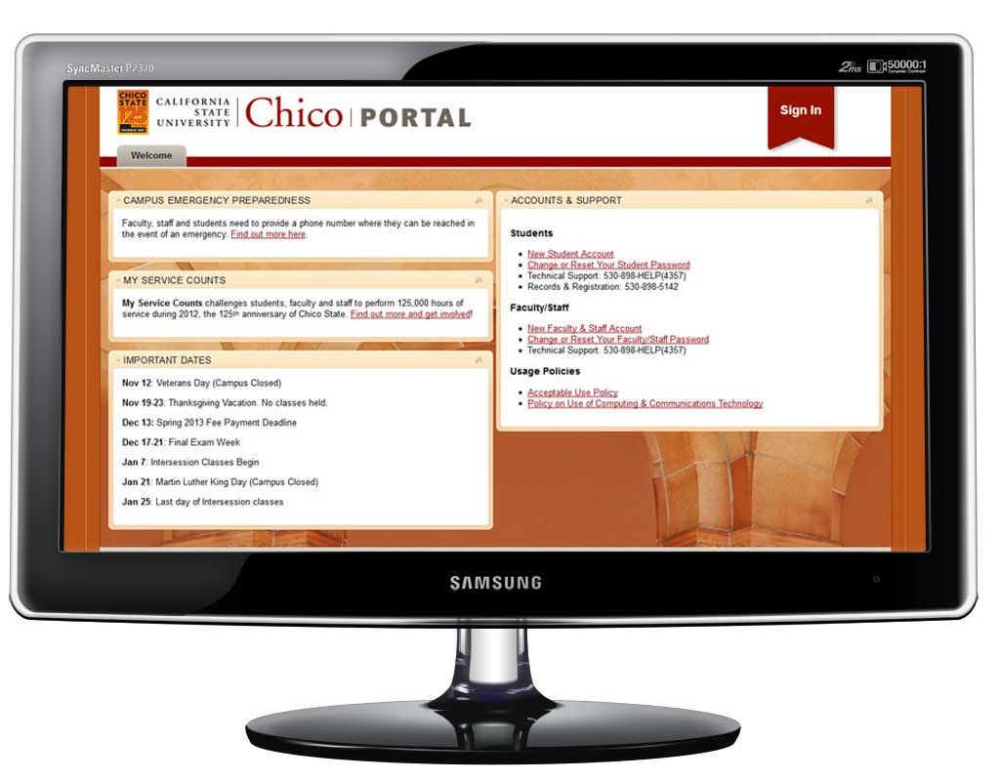
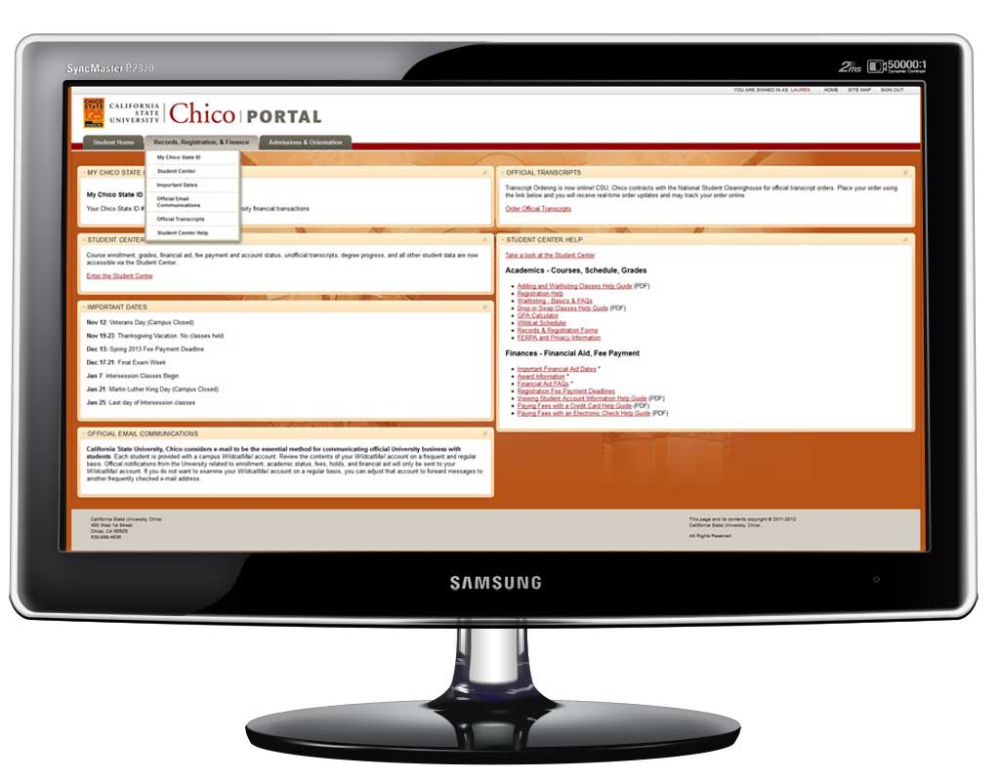

{Student Portal: Visual, Responsive, Design;}
California State University, Chico updated their student portal to a highly customizable, widget-based system. Every user had dynamic page content based on their classification, enrollment and system-wide permissions (think instructors vs assistance vs student).
I had no control over the HTML structure, but had the freedom to work within the campus' design standards to create a more up-to-date look and feel for the new system with CSS.
